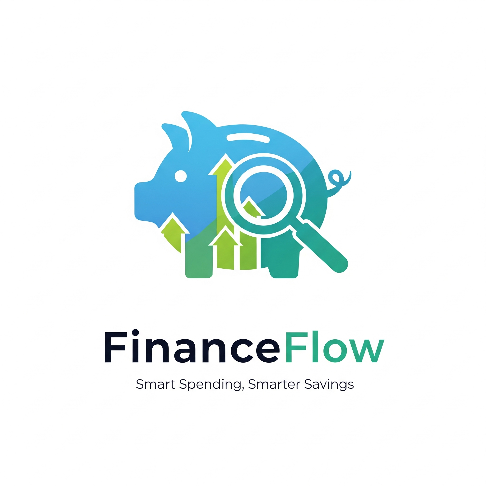

Personal Finance Expense Analysis & Savings Recommendation System
Problem Statement
Effective personal financial management is a pervasive challenge for many individuals. They often struggle with budgeting, controlling expenses, and maximizing savings due to a lack of clear, personalized insights into their financial habits. The core business problem this project addresses is the gap between raw financial data and actionable, personalized guidance. This project proposes a data-driven system that transforms complex financial data into interpretable insights, enabling users to optimize their spending and enhance their savings potential.
Data Used
The dataset for this project was obtained from Kaggle and contained 32,000 rows. Key features included:
- monthly_income_usd
- monthly_expenses_usd
- savings_usd
- loan_amount_usd
- monthly_emi_usd
- debt_to_income_ratio
Initial exploration revealed a fairly balanced dataset without any nulls, this is probably this was a synthetic dataset.
Methodology
The project followed a standard data science lifecycle:
-
Data Cleaning & Preprocessing:
- No Missing values
- Outliers found using box plot, this was corrected using Winsorization
- Feature Engineering: Calculated new columns disposable_income_usd, expense_to_income_ratio, savings_to_income_ratio, age_group
-
Exploratory Data Analysis (EDA):
- Visualized Histograms for each of key financial features
- Heatmap to correlation between the financial features
-
Model Selection & Training: K-Means Clustering
To select the optimal number of clusters (k), the Elbow Method was employed, which plots the Within-Cluster Sum of Squares (WCSS) against different values of k. The elbow point, where the rate of decrease in WCSS slows down, suggested that k=4 was the most appropriate choice for this dataset.
-
Model Evaluation:
- Silhouette Scorfe
- Davies-Bouldin Index
- WCSS (Within-Cluster Sum of Squares)
Results & Insights
Performed Box plot analysis on distributions by cluster.
- Cluster 0 and 1 have higher median income
- Cluster 2 has lowest median with a tight IQR (less income variance)
- Cluster 1 and 3 spend more
- Cluster 0 maintains lower median expenses despite high income (savings)
- Cluster 2 spends the least, likely due to limited income
- Cluster 0 and 1 save more
- Cluster 2 and 3 show limited savings
- Cluster 3 is heavily burdened by loans and EMI
- Cluster 2 and 0 have minimal to zero loans
- Cluster 0 leads with high surplus
- Cluster 1 is moderate
- Clusters 2 and 3 show low to moderate surplus
Performed Radar chart for better visual interpretation
Recommendation: Consider long-term investment, retirement optimization, or diversification into real estate or stocks.
- High on monthly_income_usd and disposable_income_usd
- Moderate savings and low debt
- Moderate savings and low debt
Recommendation: Continue current financial strategy, start automating savings and optimize for tax benefits
- Balanced profile: medium income, expenses, and savings
- Slightly better than average across most metrics, but not dominant
Recommendation: Focus on income growth (upskilling), expense minimization, and building an emergency fund
- Low across all metrics: income, savings, surplus, and debt
- Likely young earners or underemployed individuals
Recommendation: Debt consolidation, refinancing, or income support programs. Avoid further debt burden
- Dominant in loan_amount_usd and monthly_emi_usd
- Income is relatively low, savings are modest
- Disposable income is limited, indicating financial stress
Recommendations:
| Cluster | Description | Income | Savings | Loans | Recommendation |
|---|---|---|---|---|---|
| 0 | High Earners, High Surplus | High | High | Low | Diversify, invest, optimize taxes |
| 1 | Balanced Earners | Medium | Medium | Low | Continue strategy, grow savings |
| 2 | Financially Vulnerable | Low | Low | Low | Upskill, minimize expenses, emergency fund |
| 3 | High Debt Load, Financial Strain | Low | Medium | High | Consolidate debt, reduce liability |
Tools & Technologies
- Languages: Python
- Libraries: Pandas, NumPy, Scikit-learn, Matplotlib, Seaborn, Scipy
- sklearn.preprocessing: StandardScaler
- sklearn.cluster: KMeans
- sklearn.metrics: silhouette_score, davies_bouldin_score
- Development Environment: Jupyter Notebooks
- Version Control: Git, GitHub